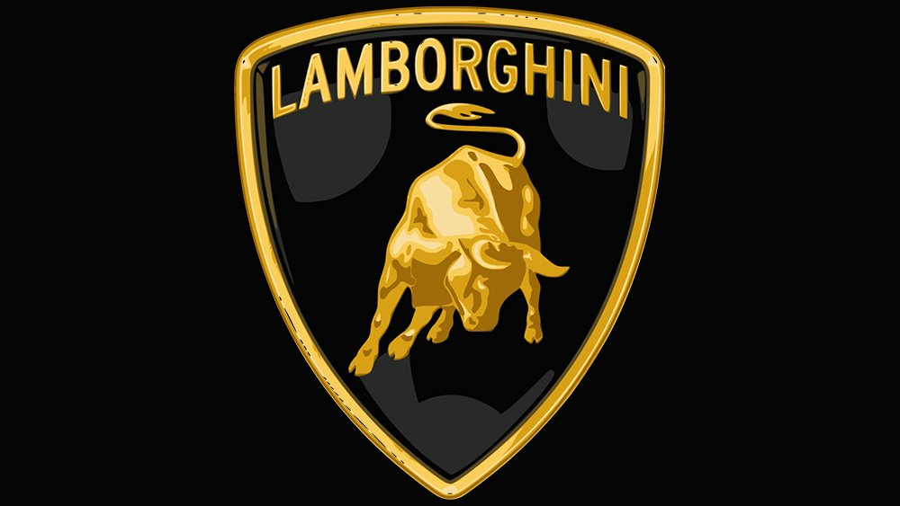

Nuestra Ayuda

Novedades y Ayuda
Necesitas ayuda con tu Lamborghini? ¡Estás en el lugar correcto!
Bienvenido a nuestra sección de ayuda dedicada a todos los entusiastas de los automóviles, y en particular, a aquellos que tienen la suerte de poseer un Lamborghini. Sabemos que estos vehículos de lujo y alto rendimiento pueden ser un desafío para mantener en perfectas condiciones, pero estamos aquí para ayudarte a sacar el máximo provecho de tu inversión y mantener tu Lamborghini en estado impecable.
Mantenimiento Preventivo
El mantenimiento preventivo es esencial para mantener tu Lamborghini en excelente estado y garantizar un rendimiento óptimo. Asegúrate de seguir las recomendaciones del fabricante para los intervalos de servicio y realiza revisiones periódicas en un taller de confianza especializado en Lamborghini. Esto incluye cambios de aceite regulares, inspecciones de frenos, sistemas de suspensión y mucho más.
Consejos para el Cuidado de la Pintura
La pintura de tu Lamborghini es una parte fundamental de su belleza y valor. Para mantenerla en perfectas condiciones, lávalo regularmente y aplica una capa de cera de alta calidad para protegerla de los elementos. Evita estacionar al sol durante largos períodos para prevenir el desgaste de la pintura y el interior.
Solución de Problemas Comunes
Los Lamborghini son automóviles de alto rendimiento y, como tal, pueden enfrentar ciertos problemas a lo largo de su vida útil. Si experimentas dificultades, como ruidos inusuales, problemas de arranque o fallos en el motor, te recomendamos ponerse en contacto con un mecánico certificado de Lamborghini de inmediato. También puedes consultar nuestro foro en línea, donde otros propietarios comparten sus experiencias y soluciones a problemas comunes.
Actualizaciones y Mejoras
Si estás buscando personalizar tu Lamborghini o mejorar su rendimiento, asegúrate de investigar cuidadosamente las opciones disponibles. Desde kits de mejora de motor hasta sistemas de escape de alto rendimiento, hay muchas formas de llevar tu Lamborghini al siguiente nivel. Siempre es aconsejable hablar con un especialista en Lamborghini antes de realizar cualquier modificación importante para garantizar que se haga correctamente.
>Conducir con Seguridad
Los Lamborghini son vehículos potentes y emocionantes de conducir, pero es fundamental hacerlo con responsabilidad y de acuerdo con las leyes locales. Siempre usa el cinturón de seguridad, respeta los límites de velocidad y evita la conducción temeraria que pueda poner en peligro tu vida y la de otros en la carretera.
Recursos Adicionales
En nuestra sección de ayuda, encontrarás una amplia gama de recursos, desde manuales del propietario hasta tutoriales en video sobre el mantenimiento de tu Lamborghini. Además, estamos aquí para responder a cualquier pregunta que puedas tener y para proporcionarte asesoramiento personalizado sobre cómo cuidar y disfrutar al máximo de tu Lamborghini.
Conclusión
Mantener un Lamborghini en su mejor estado es una inversión que vale la pena. Ya sea que estés buscando consejos de mantenimiento, solucionar problemas o personalizar tu vehículo, estamos aquí para ayudarte. Siempre es un placer ayudar a los entusiastas de los automóviles a disfrutar al máximo de la experiencia Lamborghini. ¡Gracias por confiar en nosotros y en tu increíble automóvil!